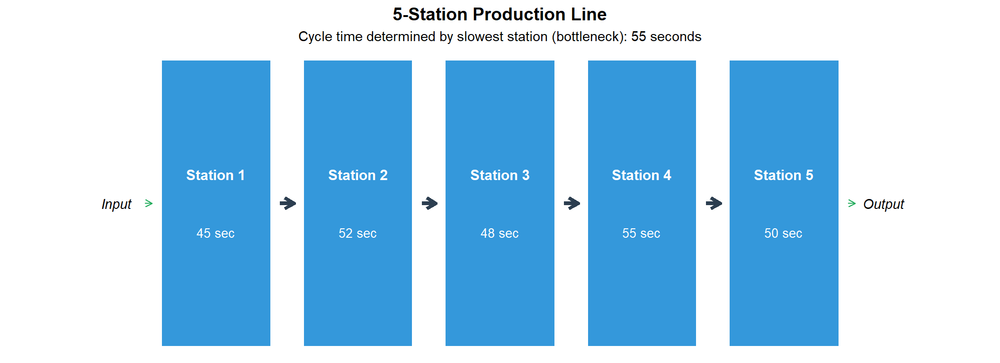
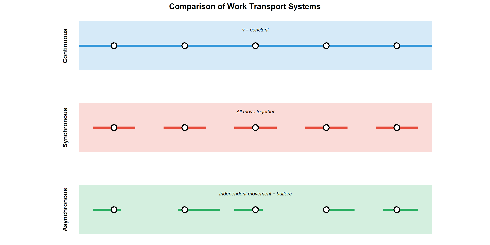
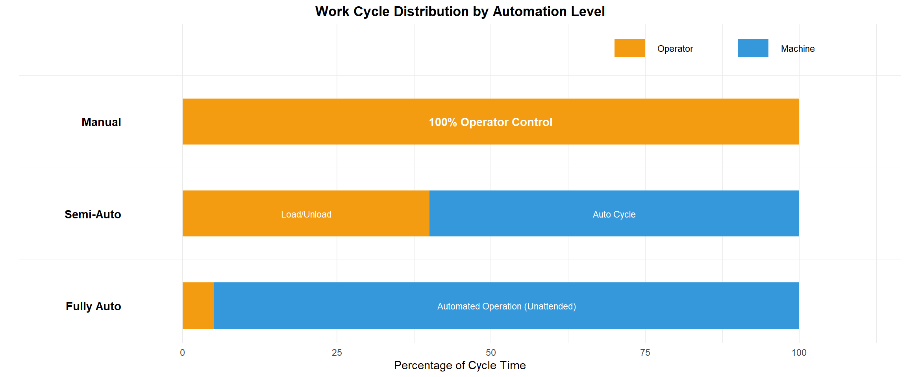
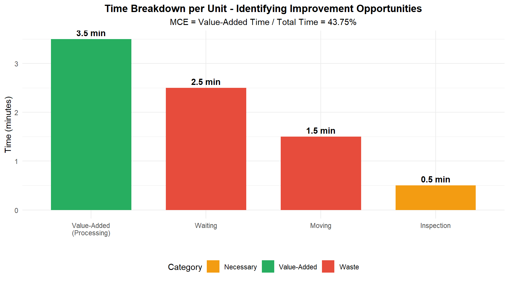
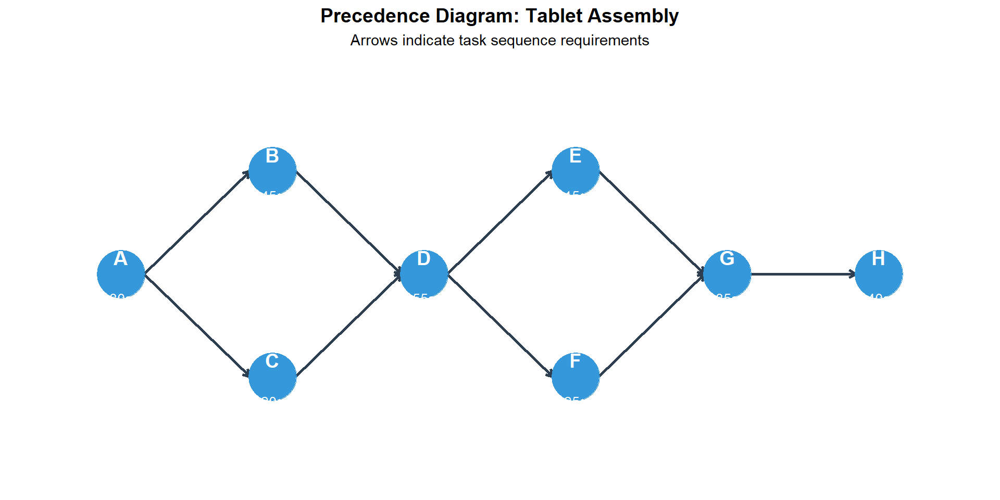
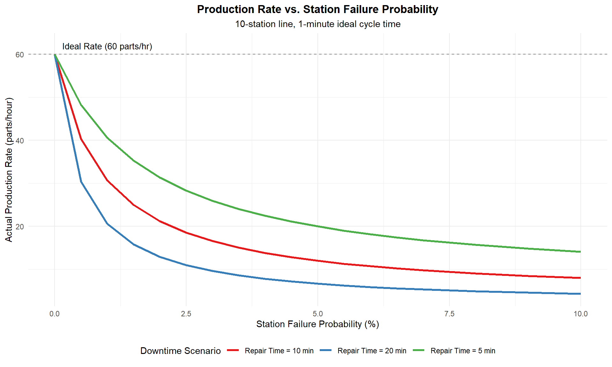
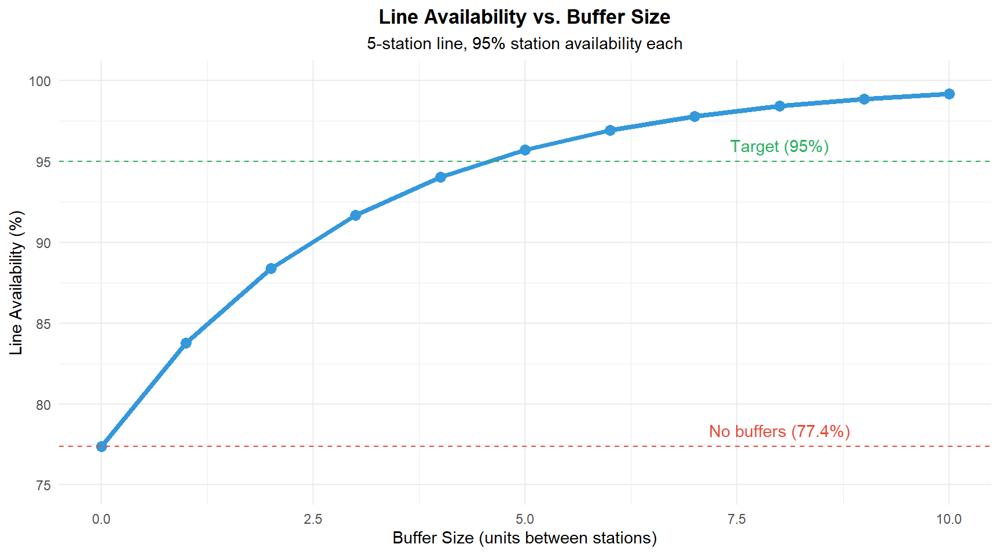
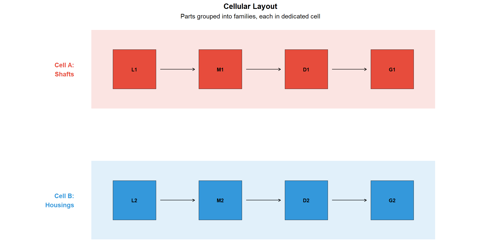
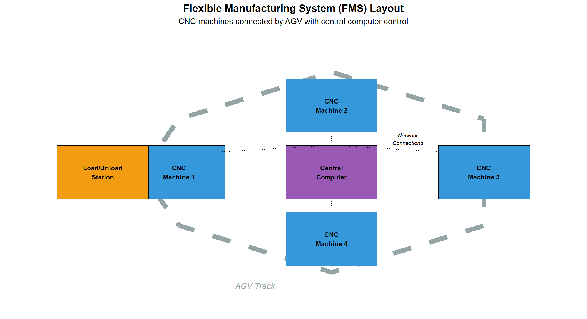
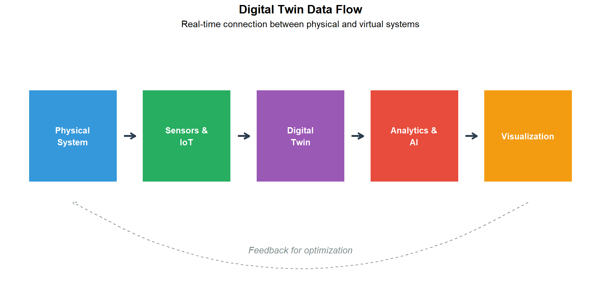

| Layout Type | Product Characteristics | Material Handling | Examples |
|---|---|---|---|
| Fixed-Position | Large, heavy, or immobile products | Cranes, hoists, fork lifts bring materials to product | Ships, aircraft, buildings, large machinery |
| Process (Job Shop) | High variety, low volume, custom work | Fork lifts, AGVs, carts move WIP between departments | Machine shops, hospitals, universities |
| Cellular | Part families, medium variety/volume | Conveyors within cells, carts between cells | Electronics assembly, engine components |
| Product (Flow Line) | Standardized products, high volume | Conveyors, automated transfer systems | Automotive assembly, bottling, food processing |
3 Integrated Manufacturing Systems
3.1 Learning Objectives
By the end of this chapter, you will be able to:
- Compare different types of production facility layouts and material handling methods
- Calculate Manufacturing Cycle Time (MCT) and Manufacturing Cycle Efficiency (MCE)
- Analyze production line performance including the impact of station failures
- Apply line balancing techniques to optimize workstation assignments
- Explain the concepts of takt time, cycle time, and their relationship
- Describe Flexible Manufacturing Systems (FMS) and their applications
- Understand modern concepts including digital twins and Industry 4.0
3.2 Material Handling Methods & Systems
There are four common types of production facility layouts, each with distinct features and material handling requirements:
Discussion: How do you choose between layout types?
Selection criteria:
| Factor | Favors Process Layout | Favors Product Layout |
|---|---|---|
| Volume | Low (< 1,000/year) | High (> 10,000/year) |
| Variety | High (many products) | Low (1-2 products) |
| Routing | Variable by product | Fixed, same for all |
| Equipment | General-purpose | Specialized |
| Worker skills | High, varied | Specific, repetitive |
| WIP inventory | High | Low |
| Lead time | Long | Short |
When in doubt: If volume and variety are moderate, consider cellular manufacturing as a compromise.
3.3 Fundamentals of Production Lines
A production line consists of workstations arranged so that the product moves from one station to the next, with a portion of the total work performed at each location.
Warning: Using `size` aesthetic for lines was deprecated in ggplot2 3.4.0.
ℹ Please use `linewidth` instead.
3.3.1 Methods of Work Transport
| Method | Description | Advantages | Disadvantages | Applications |
|---|---|---|---|---|
| Manual | Workers pass parts by hand or using simple carts | Low cost, flexible, easy to implement | Variable pace, potential blocking/starving | Low-volume assembly, repair shops |
| Continuous | Conveyor moves at constant speed; work done while moving | Smooth flow, no transfer time between stations | Work must be done on moving product | Beverage bottling, canning lines |
| Synchronous (Intermittent) | All units move simultaneously in discrete steps | Fixed cycle time, easy to control | Rigid timing, all stations must finish together | Automotive body welding, transfer lines |
| Asynchronous | Units move independently when released by worker | Absorbs variation, no blocking/starving | Requires buffers, more complex control | Electronics assembly, flexible lines |
Warning in geom_segment(aes(x = 0.5, xend = 5.5, y = 3, yend = 3), color = "#3498DB", : All aesthetics have length 1, but the data has 15 rows.
ℹ Please consider using `annotate()` or provide this layer with data containing
a single row.Warning in geom_segment(aes(x = 0.7, xend = 1.3, y = 2, yend = 2), color = "#E74C3C", : All aesthetics have length 1, but the data has 15 rows.
ℹ Please consider using `annotate()` or provide this layer with data containing
a single row.Warning in geom_segment(aes(x = 1.7, xend = 2.3, y = 2, yend = 2), color = "#E74C3C", : All aesthetics have length 1, but the data has 15 rows.
ℹ Please consider using `annotate()` or provide this layer with data containing
a single row.Warning in geom_segment(aes(x = 2.7, xend = 3.3, y = 2, yend = 2), color = "#E74C3C", : All aesthetics have length 1, but the data has 15 rows.
ℹ Please consider using `annotate()` or provide this layer with data containing
a single row.Warning in geom_segment(aes(x = 3.7, xend = 4.3, y = 2, yend = 2), color = "#E74C3C", : All aesthetics have length 1, but the data has 15 rows.
ℹ Please consider using `annotate()` or provide this layer with data containing
a single row.Warning in geom_segment(aes(x = 4.7, xend = 5.3, y = 2, yend = 2), color = "#E74C3C", : All aesthetics have length 1, but the data has 15 rows.
ℹ Please consider using `annotate()` or provide this layer with data containing
a single row.Warning in geom_segment(aes(x = 0.7, xend = 1.1, y = 1, yend = 1), color = "#27AE60", : All aesthetics have length 1, but the data has 15 rows.
ℹ Please consider using `annotate()` or provide this layer with data containing
a single row.Warning in geom_segment(aes(x = 1.9, xend = 2.5, y = 1, yend = 1), color = "#27AE60", : All aesthetics have length 1, but the data has 15 rows.
ℹ Please consider using `annotate()` or provide this layer with data containing
a single row.Warning in geom_segment(aes(x = 2.7, xend = 3.1, y = 1, yend = 1), color = "#27AE60", : All aesthetics have length 1, but the data has 15 rows.
ℹ Please consider using `annotate()` or provide this layer with data containing
a single row.Warning in geom_segment(aes(x = 4, xend = 4.4, y = 1, yend = 1), color = "#27AE60", : All aesthetics have length 1, but the data has 15 rows.
ℹ Please consider using `annotate()` or provide this layer with data containing
a single row.Warning in geom_segment(aes(x = 4.8, xend = 5.3, y = 1, yend = 1), color = "#27AE60", : All aesthetics have length 1, but the data has 15 rows.
ℹ Please consider using `annotate()` or provide this layer with data containing
a single row.
What causes blocking and starving in production lines?
Starving: A station is ready to work but has no parts to process. - Causes: Upstream station is slower, upstream breakdown, material shortage
Blocking: A station finishes but cannot release the part. - Causes: Downstream station still working, downstream breakdown, no buffer space
Solutions: 1. Buffers - Storage between stations absorbs variation 2. Line balancing - Equalize work content across stations 3. Parallel stations - Add capacity at bottlenecks 4. Preventive maintenance - Reduce breakdowns
3.3.2 Work Cycle Types
Warning in geom_tile(aes(x = 50, y = 3), width = 100, height = 0.5, fill = "#F39C12"): All aesthetics have length 1, but the data has 3 rows.
ℹ Please consider using `annotate()` or provide this layer with data containing
a single row.Warning in geom_tile(aes(x = 20, y = 2), width = 40, height = 0.5, fill = "#F39C12"): All aesthetics have length 1, but the data has 3 rows.
ℹ Please consider using `annotate()` or provide this layer with data containing
a single row.Warning in geom_tile(aes(x = 70, y = 2), width = 60, height = 0.5, fill = "#3498DB"): All aesthetics have length 1, but the data has 3 rows.
ℹ Please consider using `annotate()` or provide this layer with data containing
a single row.Warning in geom_tile(aes(x = 2.5, y = 1), width = 5, height = 0.5, fill = "#F39C12"): All aesthetics have length 1, but the data has 3 rows.
ℹ Please consider using `annotate()` or provide this layer with data containing
a single row.Warning in geom_tile(aes(x = 52.5, y = 1), width = 95, height = 0.5, fill = "#3498DB"): All aesthetics have length 1, but the data has 3 rows.
ℹ Please consider using `annotate()` or provide this layer with data containing
a single row.
3.4 Key Time Metrics
Understanding time metrics is essential for analyzing and improving production systems.
| Metric | Definition | Formula | Purpose |
|---|---|---|---|
| Takt Time | Available production time ÷ Customer demand | $T_{takt} = \frac{\text{Available Time}}{\text{Demand}}$ | Sets the pace of production to match demand |
| Cycle Time | Time between units coming off the line | $T_c = \frac{60}{R_p}$ (min, if Rp in units/hr) | Actual pace of the production line |
| Lead Time | Total time from order to delivery | Order processing + Manufacturing + Delivery | Customer's wait time |
| Throughput Time | Time from raw material to finished goods | Processing + Waiting + Moving + Inspection | Internal manufacturing efficiency |
3.4.1 Takt Time vs. Cycle Time
# Takt Time Calculation Example
# Automotive assembly plant
# Given data
shift_length_min <- 480 # 8 hours = 480 minutes
breaks_min <- 30 # Two 15-minute breaks
planned_downtime_min <- 20 # Changeover, meetings
customer_demand <- 60 # Cars per shift
# Calculate available time
available_time <- shift_length_min - breaks_min - planned_downtime_min
cat("Available Production Time:", available_time, "minutes per shift\n")Available Production Time: 430 minutes per shift# Calculate Takt Time
takt_time <- available_time / customer_demand
cat("Takt Time:", round(takt_time, 2), "minutes per car\n")Takt Time: 7.17 minutes per carcat(" =", round(takt_time * 60, 1), "seconds per car\n\n") = 430 seconds per car# Compare to actual cycle time
actual_cycle_time <- 7.5 # minutes (current performance)
cat("Actual Cycle Time:", actual_cycle_time, "minutes per car\n")Actual Cycle Time: 7.5 minutes per carif (actual_cycle_time <= takt_time) {
cat("Status: MEETING DEMAND - Cycle time is within takt time\n")
cat("Capacity margin:", round((1 - actual_cycle_time/takt_time) * 100, 1), "%\n")
} else {
cat("Status: CANNOT MEET DEMAND - Cycle time exceeds takt time\n")
cat("Shortfall:", round((actual_cycle_time/takt_time - 1) * 100, 1), "% over capacity\n")
}Status: CANNOT MEET DEMAND - Cycle time exceeds takt time
Shortfall: 4.7 % over capacityDiscussion: What happens when cycle time exceeds takt time?
When Cycle Time > Takt Time, you cannot meet customer demand.
Options to fix this:
- Reduce cycle time:
- Kaizen improvements at bottleneck
- Better tools/fixtures
- Automation of slow tasks
- Increase available time:
- Add overtime
- Add shifts
- Reduce breaks (carefully!)
- Add capacity:
- Parallel stations at bottleneck
- Additional production lines
- Outsourcing
- Manage demand:
- Negotiate delivery schedules
- Build inventory in advance
- Redirect to other facilities
Key insight: Takt time is the “heartbeat” of lean manufacturing - everything should be synchronized to it.
3.4.2 Manufacturing Cycle Time and Efficiency
# Manufacturing Cycle Time (MCT) and Efficiency (MCE) Example
# Given production data
production_time_min <- 480 # Total time equipment ran
units_produced <- 60 # Good units produced
# MCT Calculation
MCT <- production_time_min / units_produced
cat("Manufacturing Cycle Time (MCT):", MCT, "minutes per unit\n\n")Manufacturing Cycle Time (MCT): 8 minutes per unit# MCE Calculation requires understanding of value-added time
# Typical breakdown of production time:
value_added_time <- 3.5 # Actual processing time (minutes)
inspection_time <- 0.5 # Quality checks
wait_time <- 2.5 # Queuing between operations
move_time <- 1.5 # Transport between stations
total_time_per_unit <- value_added_time + inspection_time + wait_time + move_time
cat("Time breakdown per unit:\n")Time breakdown per unit:cat(" Value-added (processing):", value_added_time, "min\n") Value-added (processing): 3.5 mincat(" Inspection:", inspection_time, "min\n") Inspection: 0.5 mincat(" Waiting:", wait_time, "min\n") Waiting: 2.5 mincat(" Moving:", move_time, "min\n") Moving: 1.5 mincat(" Total:", total_time_per_unit, "min\n\n") Total: 8 min# MCE Calculation
MCE <- (value_added_time / total_time_per_unit) * 100
cat("Manufacturing Cycle Efficiency (MCE):", round(MCE, 1), "%\n")Manufacturing Cycle Efficiency (MCE): 43.8 %cat("\nInterpretation: Only", round(MCE, 1), "% of time adds value.\n")
Interpretation: Only 43.8 % of time adds value.cat("Opportunity:", round(100 - MCE, 1), "% of time is waste that could be reduced.\n")Opportunity: 56.2 % of time is waste that could be reduced.
3.5 Manual Assembly Lines
Manual assembly lines use human workers at each station. The efficiency depends on how well work is balanced across stations.
3.5.1 Line Balancing
Line balancing assigns tasks to workstations to minimize idle time while meeting production rate requirements.
Key formulas:
\[T_c = \frac{\text{Available Time}}{\text{Required Output}} = \frac{60}{R_p}\]
\[TM = \frac{\sum t_i}{T_c} = \frac{T_{wc}}{T_c}\]
\[E_b = \frac{T_{wc}}{n \times T_c} \times 100\%\]
Where: - \(T_c\) = Cycle time (time available per unit) - \(R_p\) = Production rate (units per hour) - \(TM\) = Theoretical minimum stations - \(T_{wc}\) = Total work content (sum of all task times) - \(n\) = Actual number of stations - \(E_b\) = Line efficiency (balance efficiency)
3.5.2 Line Balancing Example: Electronics Assembly
# Line Balancing Example: Tablet Computer Assembly
# Task data
tasks <- data.frame(
Task = c("A", "B", "C", "D", "E", "F", "G", "H"),
Description = c("Install battery", "Mount display", "Connect cables",
"Install motherboard", "Add memory", "Install camera",
"Attach case back", "Final test"),
Time_sec = c(30, 45, 20, 55, 15, 25, 35, 40),
Predecessors = c("-", "A", "A", "B,C", "D", "D", "E,F", "G")
)
# Display task data
cat("Assembly Tasks:\n")Assembly Tasks:print(tasks[, c("Task", "Description", "Time_sec", "Predecessors")]) Task Description Time_sec Predecessors
1 A Install battery 30 -
2 B Mount display 45 A
3 C Connect cables 20 A
4 D Install motherboard 55 B,C
5 E Add memory 15 D
6 F Install camera 25 D
7 G Attach case back 35 E,F
8 H Final test 40 G# Calculate metrics
total_work_content <- sum(tasks$Time_sec)
cat("\nTotal Work Content:", total_work_content, "seconds\n")
Total Work Content: 265 seconds# Production requirements
desired_output <- 45 # units per hour
available_time <- 3600 # seconds per hour
# Step 1: Calculate cycle time
cycle_time <- available_time / desired_output
cat("\nStep 1 - Cycle Time:")
Step 1 - Cycle Time:cat("\n Required output:", desired_output, "units/hour")
Required output: 45 units/hourcat("\n Cycle time = 3600 /", desired_output, "=", cycle_time, "seconds\n")
Cycle time = 3600 / 45 = 80 seconds# Step 2: Calculate theoretical minimum stations
TM <- total_work_content / cycle_time
cat("\nStep 2 - Theoretical Minimum Stations:")
Step 2 - Theoretical Minimum Stations:cat("\n TM =", total_work_content, "/", cycle_time, "=", round(TM, 2))
TM = 265 / 80 = 3.31cat("\n Minimum stations required:", ceiling(TM), "\n")
Minimum stations required: 4 # Step 3: Assign tasks to stations (using largest task time rule)
cat("\nStep 3 - Station Assignments (respecting precedence):\n")
Step 3 - Station Assignments (respecting precedence):cat(" Station 1: A (30s) + C (20s) + B (45s) = 95s > 80s... EXCEEDS\n") Station 1: A (30s) + C (20s) + B (45s) = 95s > 80s... EXCEEDScat(" Let's try: A (30s) + C (20s) = 50s [30s idle]\n") Let's try: A (30s) + C (20s) = 50s [30s idle]cat(" Station 2: B (45s) + E (15s) = 60s... wait, E needs D\n") Station 2: B (45s) + E (15s) = 60s... wait, E needs Dcat(" Station 2: B (45s) + D (55s) = 100s > 80s... EXCEEDS\n") Station 2: B (45s) + D (55s) = 100s > 80s... EXCEEDScat(" Station 2: B (45s) = 45s [35s idle]\n") Station 2: B (45s) = 45s [35s idle]cat(" Station 3: D (55s) = 55s [25s idle]\n") Station 3: D (55s) = 55s [25s idle]cat(" Station 4: E (15s) + F (25s) + G (35s) = 75s [5s idle]\n") Station 4: E (15s) + F (25s) + G (35s) = 75s [5s idle]cat(" Station 5: H (40s) = 40s [40s idle]\n") Station 5: H (40s) = 40s [40s idle]n_stations <- 5
efficiency <- (total_work_content / (n_stations * cycle_time)) * 100
balance_delay <- 100 - efficiency
cat("\nStep 4 - Results:")
Step 4 - Results:cat("\n Number of stations:", n_stations)
Number of stations: 5cat("\n Line efficiency:", round(efficiency, 1), "%")
Line efficiency: 66.2 %cat("\n Balance delay (idle time):", round(balance_delay, 1), "%")
Balance delay (idle time): 33.8 %cat("\n\n This is poor balance - consider redesigning tasks or adding parallel stations.")
This is poor balance - consider redesigning tasks or adding parallel stations.
Try It: Can you find a better balance?
Challenge: Reassign tasks to improve efficiency above 80%.
Hints: - Can task A be split into two smaller tasks? - Could parallel workstations handle the bottleneck task D? - What if we allow 85 seconds per station (slower line, fewer stations)?
One solution with parallel stations: - Station 1: A + C = 50s - Station 2a: B = 45s (parallel) - Station 2b: B = 45s (parallel) - Station 3: D = 55s - Station 4: E + F = 40s - Station 5: G + H = 75s
With parallelism at Station 2, effective cycle time stays at 55s (Station 3 bottleneck), but we can now achieve higher throughput.
3.6 Automated Production Lines
Automated lines reduce human intervention using mechanized transfer systems and automated workstations. They’re used for high-volume production with well-defined work content.
3.6.1 Impact of Station Failures
The performance of automated lines is degraded by station failures. Even small failure probabilities can significantly reduce output.
Actual Cycle Time: \[T_p = T_c + pT\]
Actual Production Rate: \[R_p = \frac{60}{T_p} = \frac{60}{T_c + pT}\]
Where: - \(T_c\) = Ideal cycle time (minutes) - \(p\) = Probability of station failure per cycle - \(T\) = Average downtime per failure (minutes)
# Automated Line Performance Analysis
# Line parameters
ideal_cycle_time <- 1.0 # minutes per part (ideal)
n_stations <- 10 # Number of stations
# Scenario comparison
scenarios <- data.frame(
Scenario = c("World Class", "Good", "Average", "Poor"),
Failure_Prob = c(0.005, 0.02, 0.05, 0.10), # Per station per cycle
Repair_Time = c(2, 5, 10, 15) # Minutes average
)
# Calculate line performance for each scenario
cat("Automated Line Performance Analysis\n")Automated Line Performance Analysiscat("===================================\n")===================================cat("Ideal cycle time:", ideal_cycle_time, "min/part\n")Ideal cycle time: 1 min/partcat("Number of stations:", n_stations, "\n")Number of stations: 10 cat("Ideal production rate:", 60/ideal_cycle_time, "parts/hour\n\n")Ideal production rate: 60 parts/hourfor(i in 1:nrow(scenarios)) {
p <- scenarios$Failure_Prob[i]
T <- scenarios$Repair_Time[i]
# Line failure probability (any station)
p_line <- 1 - (1 - p)^n_stations
# Actual cycle time
Tp <- ideal_cycle_time + p_line * T
# Actual production rate
Rp <- 60 / Tp
# Efficiency
efficiency <- (ideal_cycle_time / Tp) * 100
cat(sprintf("%s Performance:\n", scenarios$Scenario[i]))
cat(sprintf(" Station failure prob: %.1f%%\n", p * 100))
cat(sprintf(" Line failure prob: %.1f%%\n", p_line * 100))
cat(sprintf(" Average repair time: %d min\n", T))
cat(sprintf(" Actual cycle time: %.2f min\n", Tp))
cat(sprintf(" Actual production: %.1f parts/hour\n", Rp))
cat(sprintf(" Line efficiency: %.1f%%\n\n", efficiency))
}World Class Performance:
Station failure prob: 0.5%
Line failure prob: 4.9%
Average repair time: 2 min
Actual cycle time: 1.10 min
Actual production: 54.7 parts/hour
Line efficiency: 91.1%
Good Performance:
Station failure prob: 2.0%
Line failure prob: 18.3%
Average repair time: 5 min
Actual cycle time: 1.91 min
Actual production: 31.3 parts/hour
Line efficiency: 52.2%
Average Performance:
Station failure prob: 5.0%
Line failure prob: 40.1%
Average repair time: 10 min
Actual cycle time: 5.01 min
Actual production: 12.0 parts/hour
Line efficiency: 19.9%
Poor Performance:
Station failure prob: 10.0%
Line failure prob: 65.1%
Average repair time: 15 min
Actual cycle time: 10.77 min
Actual production: 5.6 parts/hour
Line efficiency: 9.3%
Discussion: Why is preventive maintenance critical for automated lines?
The math shows why: - At 5% failure probability with 10-minute repairs, you lose 25% of capacity - This costs more than the maintenance to prevent it
Cost comparison (example): - Lost production: 15 parts/hour × $50/part × 8 hours = $6,000/day - Preventive maintenance: $500/day - ROI of PM: 12:1
Best practices: 1. Track failure data by station 2. Prioritize PM on high-failure stations 3. Stock critical spare parts 4. Train operators on quick changeover/repair 5. Consider redundant stations for bottlenecks
3.6.2 Buffer Sizing
Buffers between stations decouple operations and improve overall line availability.

3.7 Cellular Manufacturing
Cellular manufacturing applies Group Technology to organize production into cells that specialize in “families” of similar parts.
3.7.1 Part Families and Machine Cells

| Metric | Traditional (Process) | Cellular | Typical Improvement |
|---|---|---|---|
| Setup time | High - frequent changeovers | Low - dedicated to family | 50-90% reduction |
| Work-in-process | High - batches waiting | Low - continuous flow | 50-90% reduction |
| Lead time | Long - complex routing | Short - U-cell flow | 50-80% reduction |
| Quality defects | Higher - multiple handoffs | Lower - cell ownership | 30-50% reduction |
| Material handling | High - long distances | Low - within cell | 40-70% reduction |
| Floor space | More - large aisles | Less - compact cells | 20-50% reduction |
| Worker skills | Specialized by machine | Cross-trained on cell | Increased flexibility |
3.8 Flexible Manufacturing Systems (FMS)
An FMS is a highly automated cell consisting of CNC machines interconnected by automated material handling, all controlled by a central computer.
3.8.1 FMS Components
Warning in geom_segment(aes(x = 4, xend = 2.5, y = 2.4, yend = 2.3), linetype = "dotted"): All aesthetics have length 1, but the data has 6 rows.
ℹ Please consider using `annotate()` or provide this layer with data containing
a single row.Warning in geom_segment(aes(x = 4, xend = 4, y = 2.4, yend = 2.6), linetype = "dotted"): All aesthetics have length 1, but the data has 6 rows.
ℹ Please consider using `annotate()` or provide this layer with data containing
a single row.Warning in geom_segment(aes(x = 4, xend = 5.5, y = 2.4, yend = 2.3), linetype = "dotted"): All aesthetics have length 1, but the data has 6 rows.
ℹ Please consider using `annotate()` or provide this layer with data containing
a single row.Warning in geom_segment(aes(x = 4, xend = 4, y = 1.6, yend = 1.4), linetype = "dotted"): All aesthetics have length 1, but the data has 6 rows.
ℹ Please consider using `annotate()` or provide this layer with data containing
a single row.
| Characteristic | FMS Capability |
|---|---|
| Production Volume | Medium (2,000 - 100,000/year per part type) |
| Part Variety | Medium (4-100 different part types) |
| Batch Size | Small to medium (1-500 per batch) |
| Setup Time | Minimal (automatic pallet/fixture changes) |
| Typical Parts | Prismatic parts (housings, brackets, covers) |
| Investment | $5M - $50M+ depending on size |
| Best Suited For | Aerospace, automotive components, job shops with repeat parts |
3.9 Modern Manufacturing Concepts
3.9.1 SMED (Single-Minute Exchange of Die)
SMED is a lean manufacturing technique to reduce changeover time to under 10 minutes (“single digit minutes”).
| Step | Description | Examples | Typical Improvement |
|---|---|---|---|
| 1. Separate | Distinguish internal setup (machine stopped) from external setup (machine running) | Pre-stage tools while machine runs; Pre-heat molds; Prepare fixtures | 30-50% reduction |
| 2. Convert | Convert as much internal setup to external setup as possible | Use quick-release clamps instead of bolts; Standardize tool heights | Additional 20-30% |
| 3. Streamline | Reduce time for remaining internal and external activities | Eliminate adjustments; Use one-turn fasteners; Parallel operations with 2 people | Additional 10-20% |
Case Study: Injection Molding Changeover
Before SMED: - Changeover time: 90 minutes - Machine stopped for entire process - One operator working alone
After SMED analysis:
| Activity | Before | Type | After | Change |
|---|---|---|---|---|
| Find tools | 10 min | Internal | 0 | External - tools pre-staged |
| Remove old mold | 15 min | Internal | 5 min | Quick-release clamps |
| Get new mold | 10 min | Internal | 0 | External - mold pre-staged at machine |
| Install new mold | 20 min | Internal | 8 min | Standardized mold heights |
| Connect utilities | 10 min | Internal | 4 min | Quick-connect fittings |
| Adjust settings | 15 min | Internal | 3 min | Pre-programmed recipes |
| First article | 10 min | Internal | 5 min | Improved documentation |
Results: - Total changeover: 25 minutes (72% reduction) - Additional capacity: +15 changeovers/week possible - Smaller batch sizes now economical
3.9.2 AGV and AMR Systems
| Feature | AGV (Automated Guided Vehicle) | AMR (Autonomous Mobile Robot) |
|---|---|---|
| Navigation | Fixed path (wires, magnets, tape) | Dynamic (SLAM, vision, sensors) |
| Flexibility | Low - follows predetermined routes | High - calculates optimal routes |
| Infrastructure | Requires installation (floor modifications) | Minimal (maps environment) |
| Cost | Lower vehicle cost, higher infrastructure | Higher vehicle cost, lower infrastructure |
| Path Changes | Requires physical modification | Software update only |
| Obstacle Handling | Stops and waits | Navigates around obstacles |
| Best Application | High-volume, repetitive routes | Variable routes, dynamic environments |
3.9.3 Digital Twin
A digital twin is a virtual representation of a physical manufacturing system that is updated in real-time with sensor data.

Digital Twin Applications: - Predictive maintenance (predict failures before they occur) - Process optimization (simulate changes before implementation) - Training (virtual commissioning and operator training) - Quality prediction (correlate parameters with outcomes)
3.10 Industry Applications
| System Type | Automotive | Food Processing | Aerospace/Defense |
|---|---|---|---|
| Transfer Line | Engine block machining, cylinder head lines | Beverage bottling, canning lines | High-volume fastener production |
| Manual Assembly | Final vehicle assembly, interior trim | Packaging, quality inspection | Aircraft final assembly, inspection |
| FMS | Transmission components, brake parts | Multi-product bakery equipment | Structural component machining |
| Cellular | Subassemblies, wiring harnesses | Specialty product lines | Avionics assembly, repair cells |
| AGV/AMR | Body shop material delivery, parts sequencing | Ingredient delivery, packaging transport | Large assembly transport, tool delivery |
3.11 Review Questions
Question 1: Takt Time Calculation
A plant operates 8-hour shifts with 30 minutes of breaks. Daily demand is 400 units. Calculate the takt time.
Solution:
Available time = 8 hours × 60 min - 30 min = 450 minutes
Takt time = 450 min / 400 units = 1.125 minutes per unit = 67.5 seconds
If actual cycle time is 60 seconds, the plant has (67.5 - 60)/67.5 = 11% capacity margin.
Question 2: Line Efficiency
A 6-station assembly line has a cycle time of 2 minutes. The task times at each station are: 1.8, 1.9, 2.0, 1.7, 1.6, and 1.5 minutes. Calculate the line efficiency.
Solution:
Total work content = 1.8 + 1.9 + 2.0 + 1.7 + 1.6 + 1.5 = 10.5 minutes
Line efficiency = (10.5) / (6 × 2.0) × 100% = 10.5/12 × 100% = 87.5%
Balance delay (idle time) = 100% - 87.5% = 12.5%
Question 3: Downtime Impact
An automated line has 8 stations, each with 3% failure probability per cycle and 8-minute average repair time. The ideal cycle time is 0.5 minutes. What is the actual production rate?
Solution:
Line failure probability = 1 - (1 - 0.03)^8 = 1 - 0.97^8 = 1 - 0.784 = 21.6%
Actual cycle time = 0.5 + (0.216 × 8) = 0.5 + 1.73 = 2.23 minutes
Actual production rate = 60 / 2.23 = 26.9 parts/hour
(vs. ideal of 120 parts/hour - only 22% of ideal capacity!)
This shows why reliability is critical in automated systems.
Question 4: FMS Selection
A company makes 15 different part numbers with annual volumes of 500-5,000 each. Parts are machined from aluminum and require milling, drilling, and tapping. Which system is most appropriate: dedicated transfer line, FMS, or CNC job shop?
Answer: FMS is most appropriate because:
- Volume range (500-5,000) is ideal for FMS
- Part variety (15 types) requires flexibility
- Similar operations (milling, drilling, tapping) can share equipment
- Material (aluminum) machines well on CNC
Transfer line would require too much volume per part. Job shop would have high setup times and low efficiency for these volumes.
Question 5: SMED Application
A stamping press has a 45-minute die change. Internal activities are 35 minutes, external are 10 minutes but currently done with machine stopped. How much can SMED reduce this?
Answer:
Step 1 - Separate: Do the 10 minutes of external work while press runs. - New changeover: 35 minutes (30% reduction)
Step 2 - Convert: Analyze the 35 minutes: - If 15 minutes can be converted to external (pre-staging, etc.): New changeover = 20 minutes
Step 3 - Streamline: Quick-release clamps, standardization might save another 5 minutes. - Final changeover: 15 minutes (67% reduction)
This enables smaller batch sizes and more frequent changeovers.
3.12 Summary
| Topic | Key Points |
|---|---|
| Production Lines | Manual, continuous, synchronous, or asynchronous transfer; each has trade-offs |
| Time Metrics | Takt time = demand pace; Cycle time = actual pace; MCE measures value-added % |
| Line Balancing | Assign tasks to minimize idle time; Efficiency = work content / (stations × cycle time) |
| Automated Lines | Reliability is critical; Small failure probabilities cause large capacity losses |
| Cellular Manufacturing | Group Technology groups part families; Reduces setup, WIP, lead time 50-90% |
| FMS | Automated cells for medium variety/volume; Computer-controlled flexibility |
| Modern Concepts | SMED for quick changeover; AGV/AMR for material handling; Digital twins for optimization |
3.12.1 Key Takeaways
- Match system to product - Volume and variety determine optimal manufacturing system
- Takt time sets the pace - Everything should be designed to meet customer demand rate
- Balance matters - Unbalanced lines waste capacity through idle time
- Reliability is critical - Small failures compound to large losses in automated systems
- Flexibility has value - FMS and cellular systems enable quick response to change
- Technology evolves - Digital twins and AMRs are transforming manufacturing
3.13 References
- Groover, M.P. (2020). Automation, Production Systems, and Computer-Integrated Manufacturing (5th ed.). Pearson.
- Liker, J.K. (2004). The Toyota Way. McGraw-Hill.
- Shingo, S. (1985). A Revolution in Manufacturing: The SMED System. Productivity Press.
- Black, J.T. (1991). The Design of the Factory with a Future. McGraw-Hill.